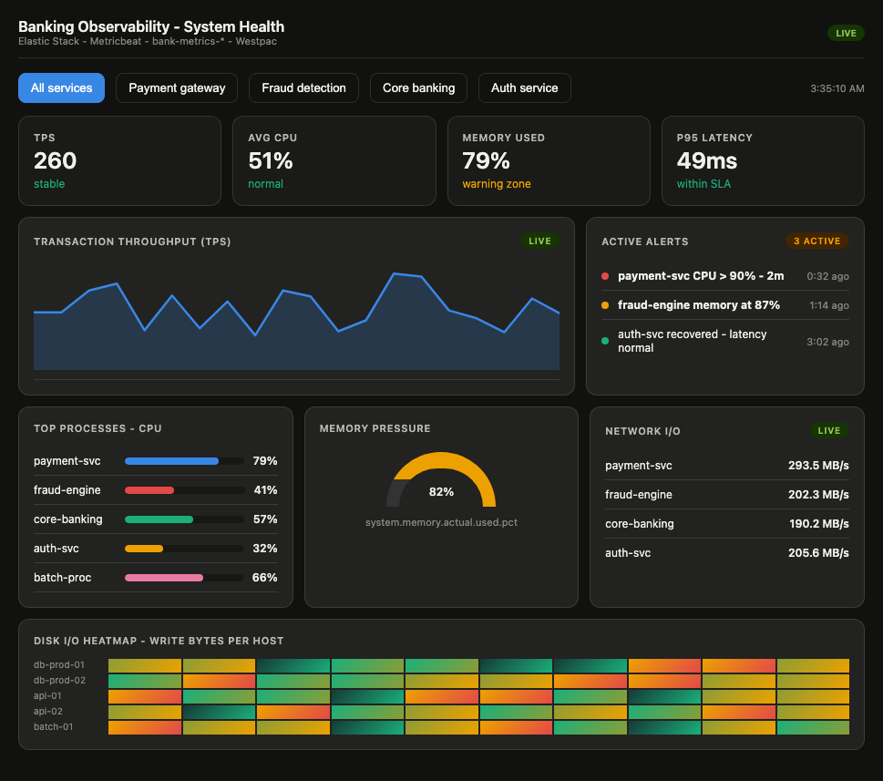
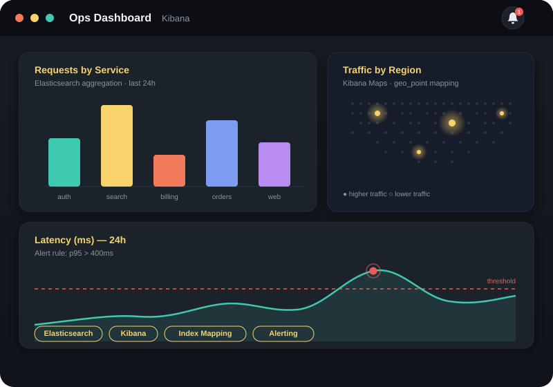

Data · AI · Analytics
Long Hoa Chung
Telling impactful stories through data and driving better business decisions.
View My WorkAbout Me
I work across data architecture, applied AI, and full-stack delivery — designing multi-agent systems, building applications end-to-end, and doing the context engineering that lets AI tools understand business intent rather than just follow instructions. Most recently I supported a large-scale Splunk-to-Elastic migration at Westpac, building dashboards and alerts across banking systems and using agentic automation to support high-throughput delivery. My background started in scientific research, which shaped how I approach problems: starting from evidence, testing assumptions, and iterating toward a reliable answer. I am particularly interested in financial services and business problems where strong data foundations, clear observability, and well-designed automation can improve decision-making, manage risk, increase operational efficiency, and create measurable value.
Portfolio
I bring a blend of modern data analytics, data architecture, and applied AI experience. Through my work with Westpac, I have gained exposure to financial services, business operations, and technology-driven service delivery, including large-scale platform migration and observability. My portfolio demonstrates how strong data foundations and practical innovation can support better decisions, improve efficiency, and deliver meaningful business value.
Splunk to Elastic Migration Project

Overview
Working as part of a team of 15 engineers on an ongoing migration from Splunk to Elastic, including thousands of existing dashboards and alerts. The project has been underway for four months, with migration and delivery work continuing.
Responsibilities
Supported the migration of dashboards and alerts across two different schemas and database structures. Created a field-mapping register as a single source of truth for field availability, compliance requirements, dashboard functionality, and alert behaviour. Also created de novo dashboards to support end-to-end observability.
Technology
Applied Elastic ESQL and translated Splunk queries into Elastic-compatible searches. Used multi-agent systems and automation platforms to support high-throughput dashboard creation.
Outcome
Continuing to deliver dashboards and alerts while building a repeatable migration workflow. The project aims to automate the migration of thousands of dashboards with high accuracy by using the field register as the source of truth. It is expected to save the organisation approximately $10 million per year, facilitate CI/CD development, and enable metrics analytics for incident investigation. Further migration work remains in progress.
More Projects
Falcon 9 Launch SpaceX – Data Science Capstone Project

End-to-end data science project analysing SpaceX Falcon 9 launches, combining API data, exploratory data analysis, and machine learning to predict landing success.
Solution
Delivered an end-to-end pipeline integrating API ingestion, feature engineering, and machine-learning models to predict first-stage landing success.
Weather Forecast – Global Cities

Interactive global weather dashboard using live APIs to compare multi-day forecasts across major cities with robust data parsing and visualisation.

Solution
Built an API-driven system aggregating real-time weather data with user-requested city expansion via an in-app contact form.

Developed machine-learning models to predict loan defaults using financial data, ranking in the top 92% globally in the IBM Data Science challenge.


Solution
Applied feature engineering and classification models to identify at-risk borrowers, stress-testing performance across ordinary and extreme cases.

Predicted customer churn for subscription-based services using logistic regression, random forest, and gradient boosting models.
Solution
Compared models using cross-validation and AUC metrics to select robust, business-ready predictors.

Analysed Stack Overflow developer survey data and built IBM Cognos dashboards revealing technology trends and workforce insights.


Solution
Delivered interactive dashboards highlighting emerging skills, hiring demand, and strategic workforce implications.
Skills
I combine data architecture, analytics, and applied AI to turn complex data environments into reliable systems, useful insights, and practical outcomes.
Data Architecture
Data modelling, schemas, field mapping, pipelines, governance, and platform migration.
Agentic AI
Multi-agent workflows, AI-assisted automation, orchestration, and high-throughput delivery.
Analytics & Observability
Dashboards, alerts, metrics analytics, ESQL, incident investigation, and reporting.
Data Science & Research
Machine learning, exploratory analysis, biomedical data, and evidence-based problem solving.

Elastic Stack & Kibana
Kibana dashboards, alerting, and Elasticsearch index mappings for real-time monitoring and KPI tracking.
Soft Skills & Leadership
Stakeholder engagement with executives and regulators, leading cross-functional teams, and mentoring junior staff.
Contact Me
If you'd like to get in touch, please fill out the form below or reach me via social media.